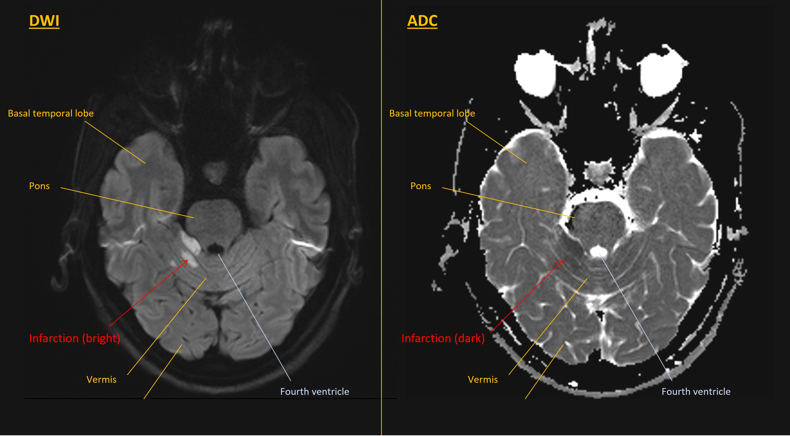

Case 24 - Dizziness and slurred speech
Outcome
A CT head was normal. The patient started dual antiplatelet therapy and a statin. He was fit to return home given he was not disabled by this event.
An MRI the next day confirmed a lesion in the right paracentral cerebellum. This was bright on DWI and dark on ADC, confirming cytotoxic oedema – consistent with a stroke in the right SCA territory.

An ECG showed sinus rhythm. A CT angiogram was normal, with no dissection. The patient currently is awaiting an echocardiogram to look for abnormalities such as patent foramen ovale which might have caused a cardioembolic stroke. Tests for causes of young-onset stroke were unremarkable.
He completed three weeks of dual antiplatelets and remains on a single agent as monotherapy along with measures to control cholesterol and blood pressure.
Final diagnosisAcute-onset vertigo with gait and right-sided limb ataxia and dysarthric speech, due to an ischaemic stroke affecting the upper central and right paracentral cerebellum.
Key points